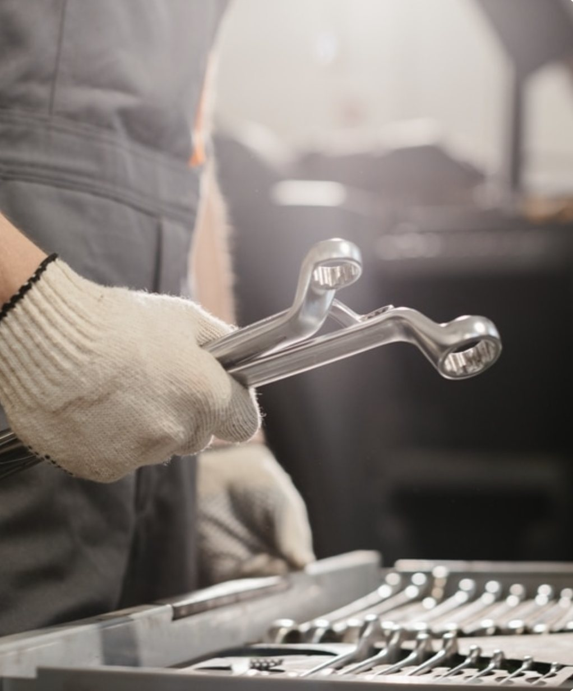
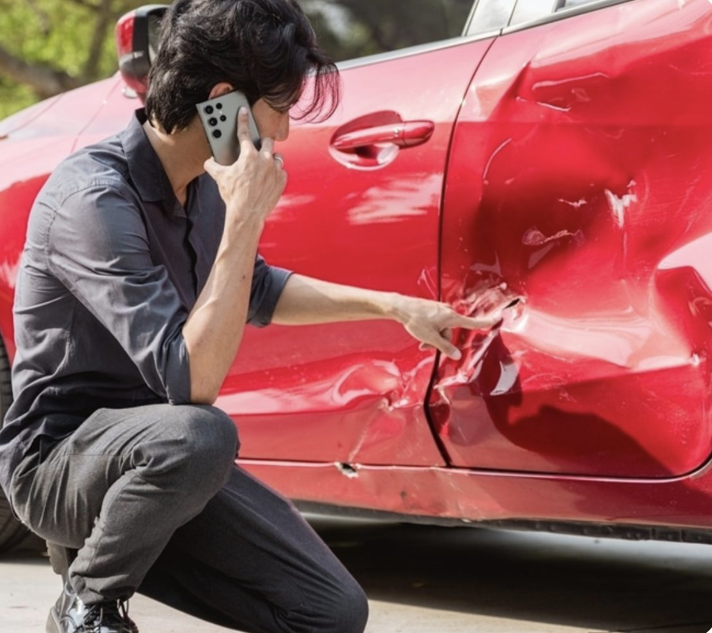
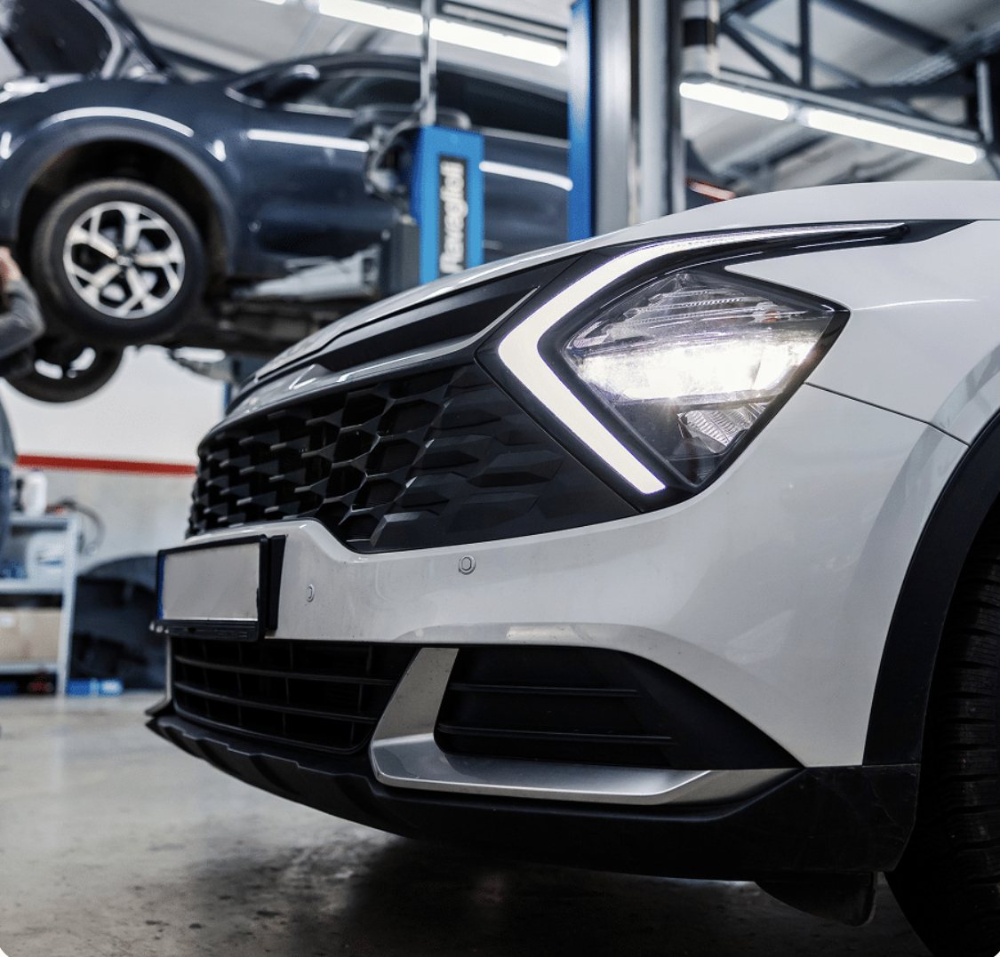

Mécanique, carrosserie, peinture : un seul interlocuteur, toutes marques, à Narbonne.
MécaniqueRévision et entretienVidange, filtres, niveaux : l’atelier intervient selon les préconisations du carnet d’entretien.CarrosserieLustrage et polissageUn rendu brillant et uniforme, avec des finitions professionnelles.

AtelierUn atelier équipéÉquipé pour toutes les interventions mécaniques, de la vidange à la panne moteur difficile à identifier.PeinturePeinture complète ou partielleRaccords et retouches aux teintes constructeurs, de l’apprêt aux finitions.

SinistreUn accrochage ? On s’occupe de toutÉvaluation des dommages, devis gratuit, relation avec votre assureur et véhicule de courtoisie.MoteurMoteur et diagnosticRecherche de pannes, injecteurs, bougies, turbo : on identifie la panne avant d’intervenir.

Toutes marquesCitadines, SUV, utilitairesUn garage indépendant à Narbonne, pour tous les véhicules, diesel comme essence.